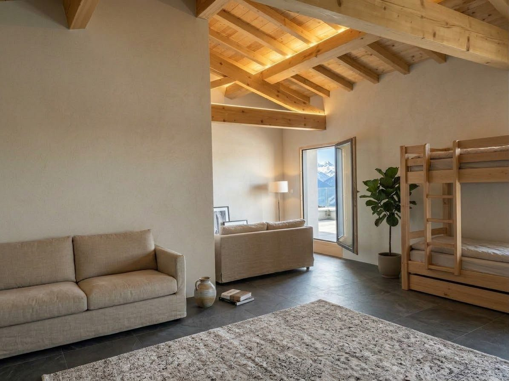
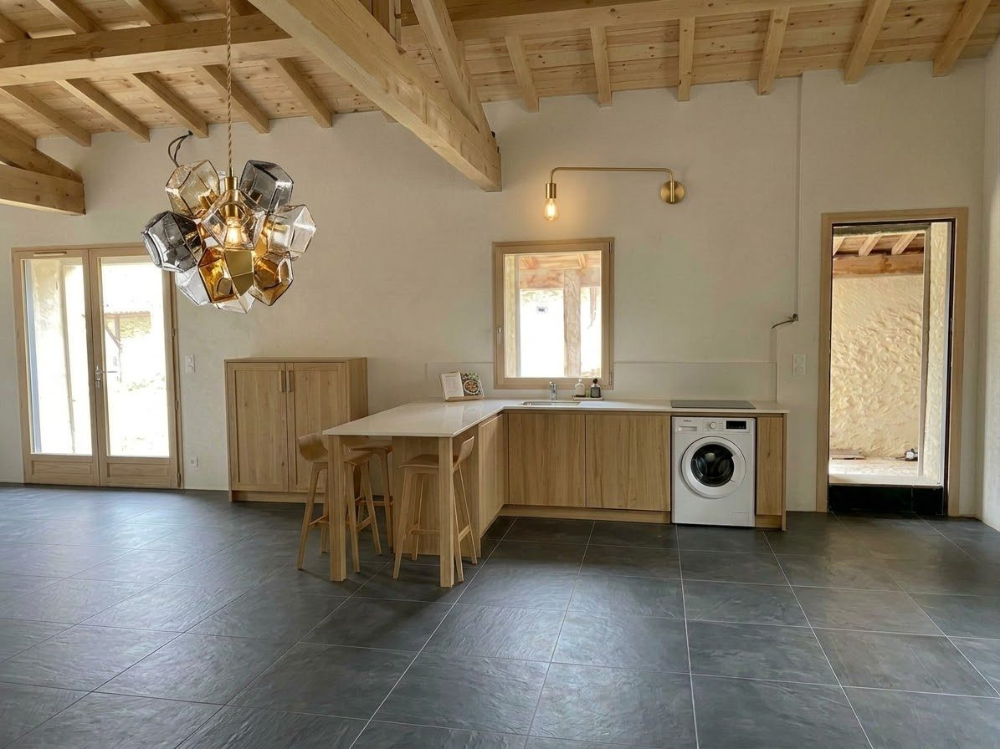
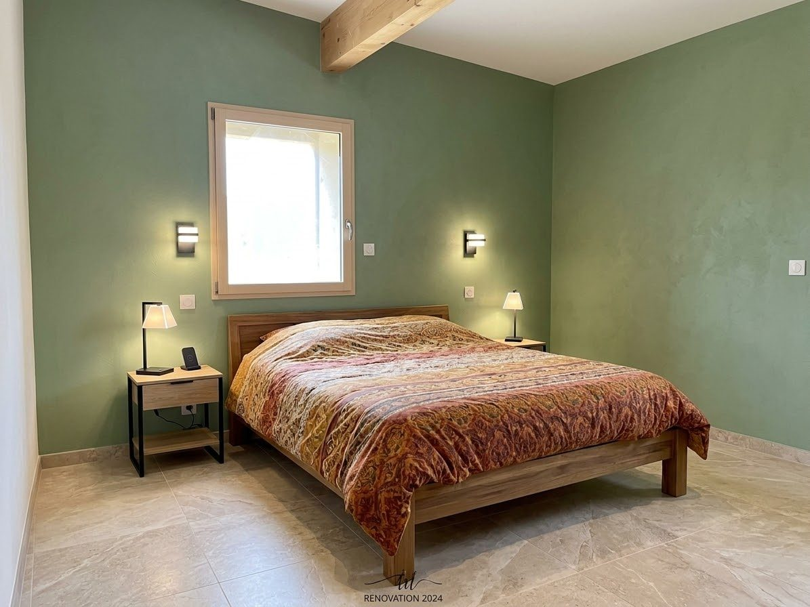
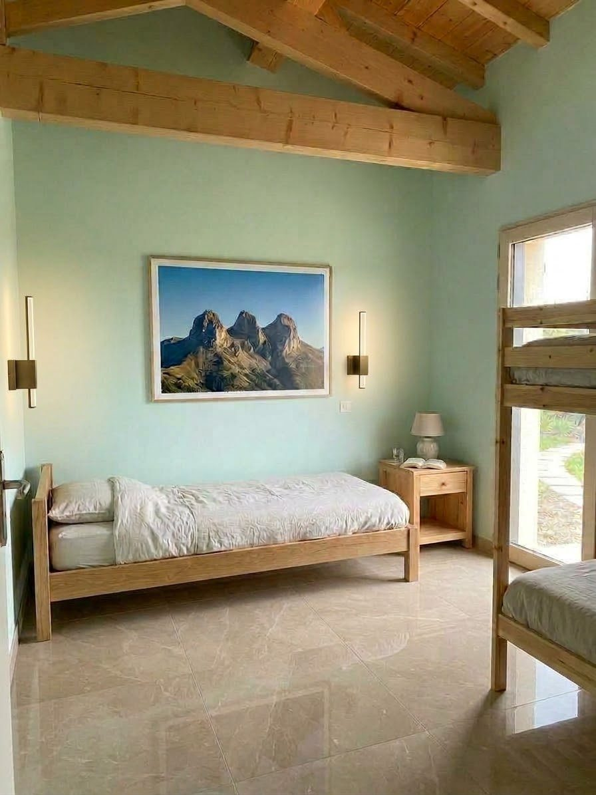
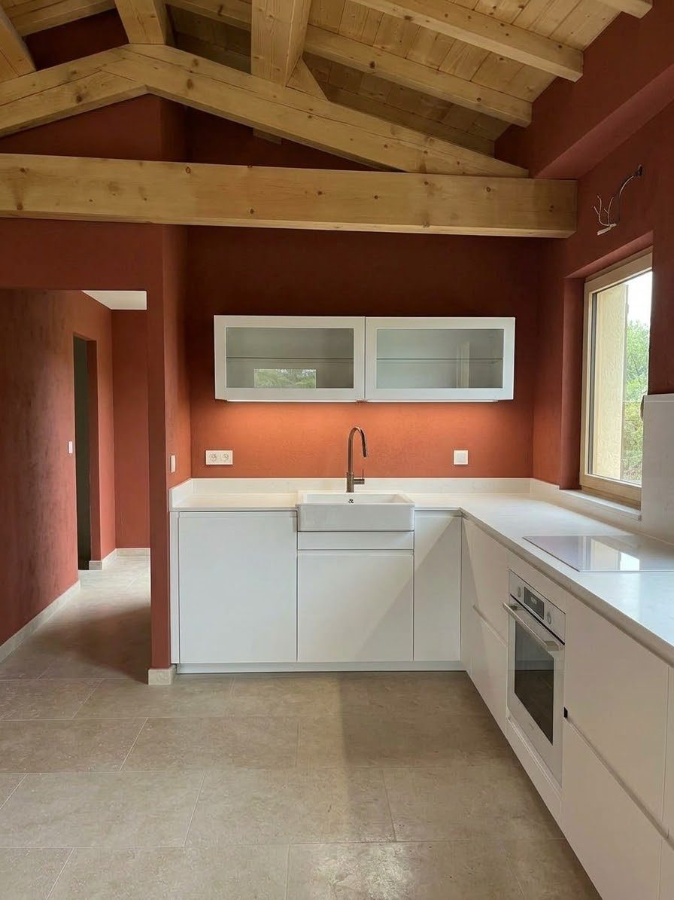
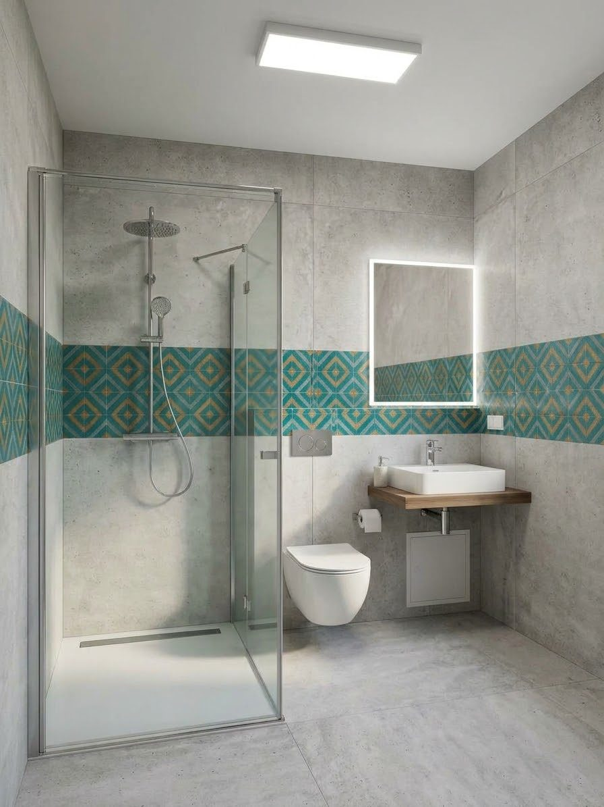
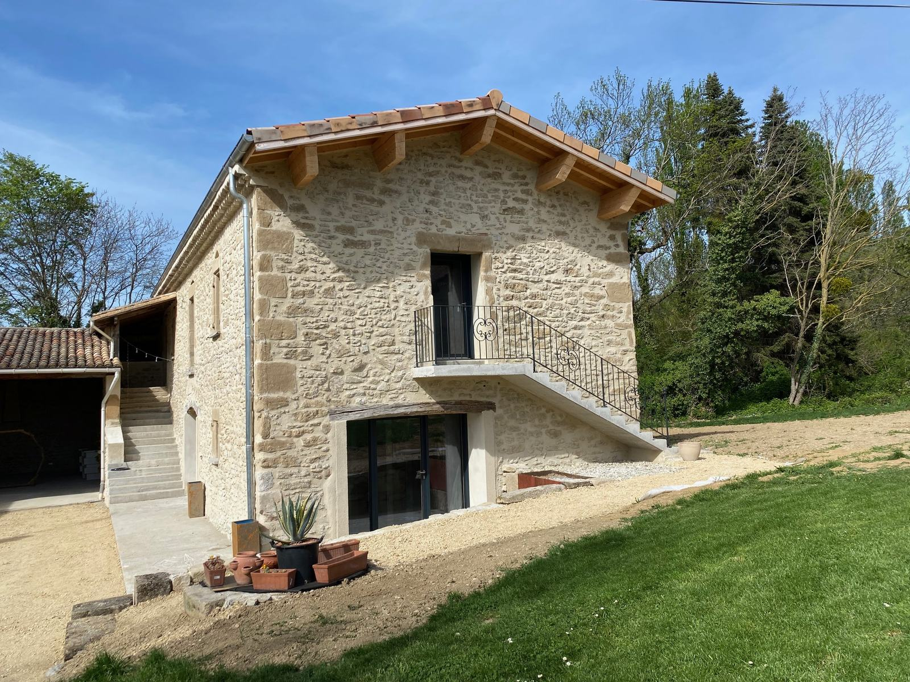
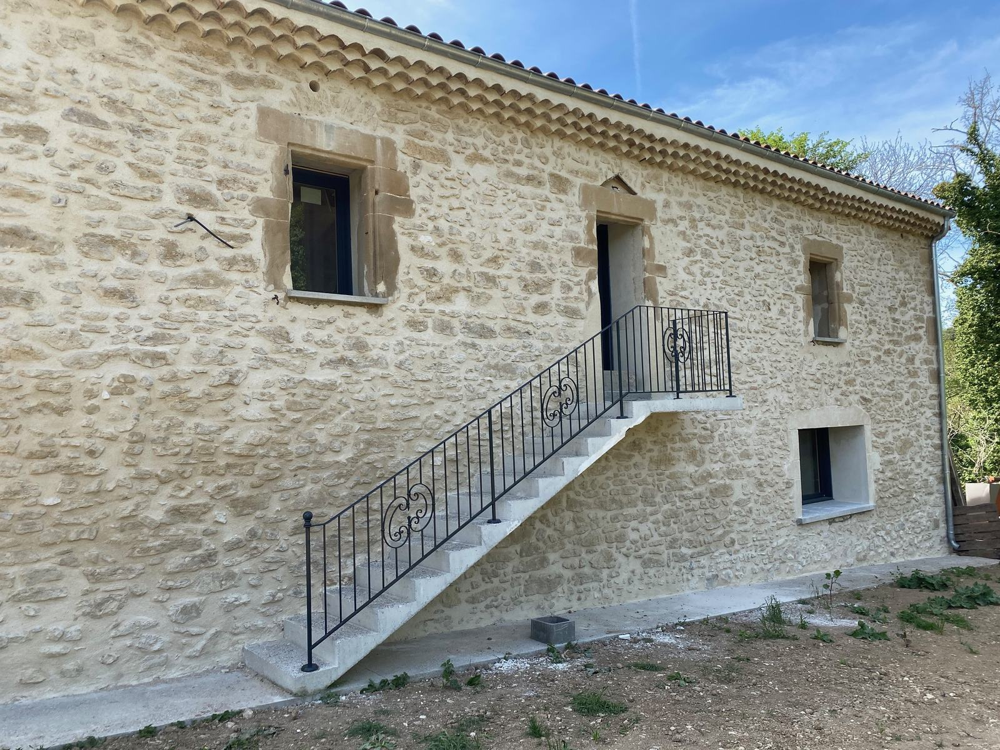
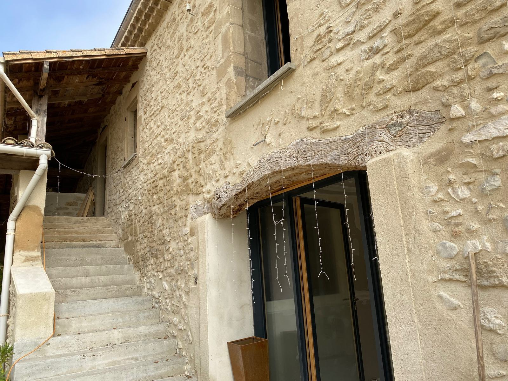

Rez-de-chaussée
Le gîte de groupe et le studio
- Un gîte de groupe pour 14 personnes : chambres de 2 en lits superposés, 2 blocs sanitaires.
- Un studio pour 4 personnes, accessible aux personnes à mobilité réduite (PMR).
L’ancienne ferme du domaine devient un gîte de groupe, un studio accessible et 2 appartements. Ouverture en avril 2027.
Deux étapes
Rez-de-chaussée
Premier étage
Avril 2028 · premier étage
Ces images sont des représentations du projet : elles donnent l’esprit des 2 appartements de l’étage. Le rendu final pourra être différent.

Représentation
Représentation
Représentation
Représentation
Représentation
ReprésentationAujourd’hui
Les travaux avancent : voici la ferme telle qu’elle est aujourd’hui. Les photos des intérieurs viendront à la fin du chantier.



Bon à savoir : Location seule du gîte de la ferme ou d’un appartement : la piscine et le parc ne sont pas inclus. Ils le sont lors de la privatisation du domaine entier.
Dites-nous vos dates : nous vous répondons dès que le calendrier est ouvert.
Demander mes dates